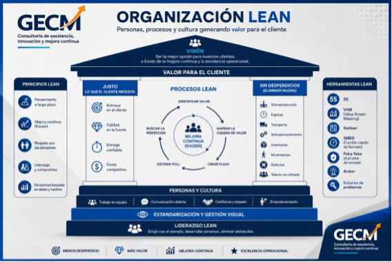
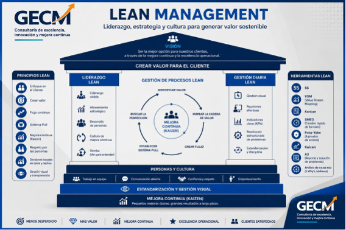
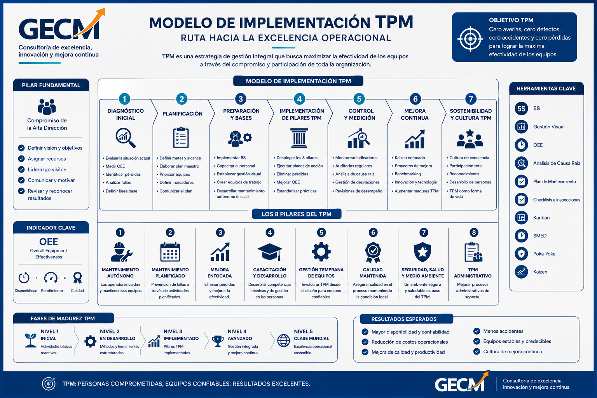
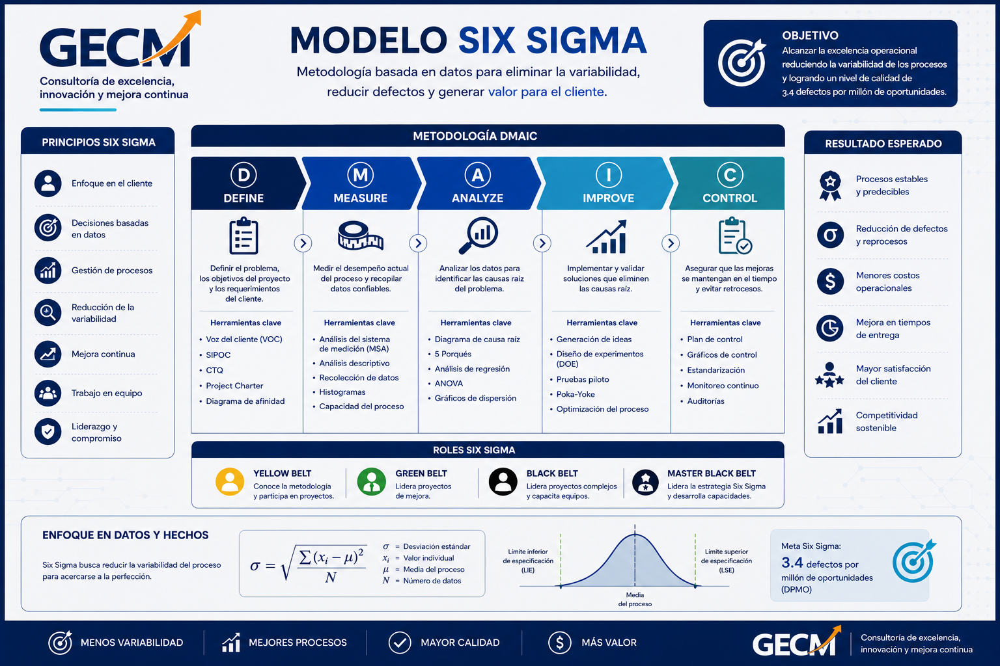
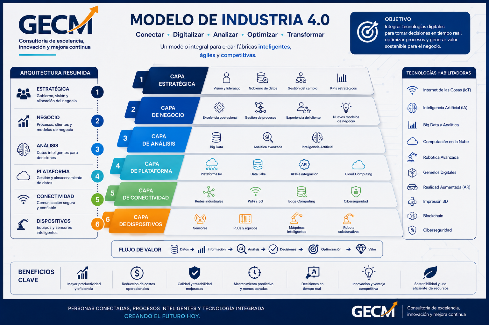

Ofrecemos un portafolio completo de servicios diseñados para transformar operaciones y generar resultados medibles y sostenibles.
Evaluamos el estado actual de la operación para identificar oportunidades de mejora.
Diseñamos e implementamos mejoras para incrementar eficiencia y reducir costos.
Acompañamos a la organización en la implementación de sistemas sostenibles.
Fortalecemos las capacidades de supervisores y jefaturas.
Aseguramos que las mejoras se traduzcan en impacto real en el negocio.
Aplicamos marcos de trabajo probados a nivel mundial, combinados con nuestra experiencia de campo, para garantizar transformaciones reales y sostenibles en tu organización.
Lean es una filosofía de gestión enfocada en maximizar el valor para el cliente detectando y eliminando los desperdicios que existen en los procesos y actividades dentro de una organización. Lean busca una mentalidad enfocada en la mejora continua buscando maximizar la rentabilidad a través del incremento de productividad, mejora de la calidad y la reducción de costos.

Lean Management se desarrolla dentro del sistema de una organización, enfocándose en el liderazgo, cultura y gestión estratégica orientada a eficiencia y valor. Es clave entender la diferencia entre ambos; en #GECMConsulting ayudamos a las empresas a entender y aplicar correctamente los principios y sistemas para una transformación cultural eficiente.

Es un modelo importante para la gestión de la mejora. En GECMConsulting nos enfocamos en un cambio cultural a nivel de toda la organización, buscando maximizar la eficiencia de los equipos con un diagnóstico exhaustivo de la gestión de mantenimiento y las áreas de soporte como calidad, compras y proveedores. Utilizamos desarrollos en línea de métricas como el OEE y costos, centrándonos en las fallas críticas para activar el ciclo de mejora.

Llevamos una enseñanza aplicada con la práctica, a través del desarrollo de proyectos que representen un retorno para la organización. Es clave contar con data limpia y, a través de ello, activar el ciclo DMAIC, utilizando las técnicas estadísticas para eliminar la variabilidad y buscar el cero defecto. El Six Sigma es el siguiente paso luego de tener una organización con las bases del Lean y Lean Management.

Hoy las empresas están buscando desarrollos tecnológicos para la previsión, predicción y prescripción de los ruidos naturales del proceso, el cual puede romper el flujo continuo dentro de una organización y traducirse en altos costos de operación o pérdidas comerciales. Nuestra experiencia nos ayuda a detectar el nivel de madurez de una organización y activar proyectos a medida que busquen brindar la agilidad en la toma de decisiones. Contamos con un staff de desarrolladores que pueden atender esa necesidad en el uso de las tecnologías de Industria 4.0.

En GECM Consulting buscamos transformar ideas en valor, brindando asesoría a las organizaciones que busquen trascender en el mercado actual. El uso de la tecnología dentro de los procesos busca dar la agilidad en la toma de decisiones y atención al cliente. Trabajamos de la mano con nuestros clientes para ofrecer un producto hecho a medida que atienda las necesidades del negocio y cliente. Nuestra experiencia y enfoque en la búsqueda del valor nos compromete a ser los socios estratégicos de la empresa que buscan mantener un modelo de negocio diferenciado.
Actualmente, las empresas líderes están integrando sus sistemas de gestión para lograr la excelencia operacional:
Ofrecemos entrenamientos de metodologías y modelos de gestión a nivel industrial, logístico y tecnológico. Nuestro diferencial integra la parte teórica y práctica en base a experiencias reales, ofreciendo una alternativa distinta de entrenamientos de acuerdo a la necesidad del negocio.